Nicolas TRAUWAEN
Ingénieur production / SRE
Nicolas TRAUWAEN
Ingénieur production / SRE
Sylvain MÉTAYER
Tech Lead
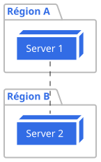
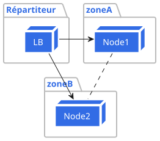
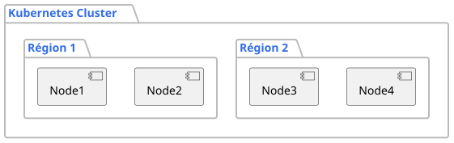
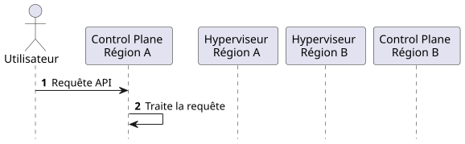
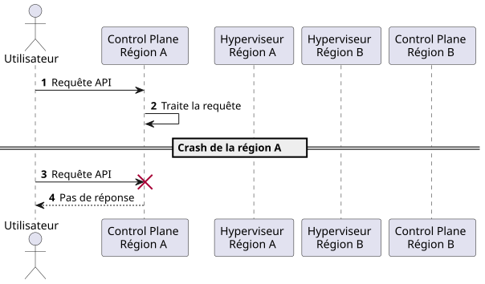
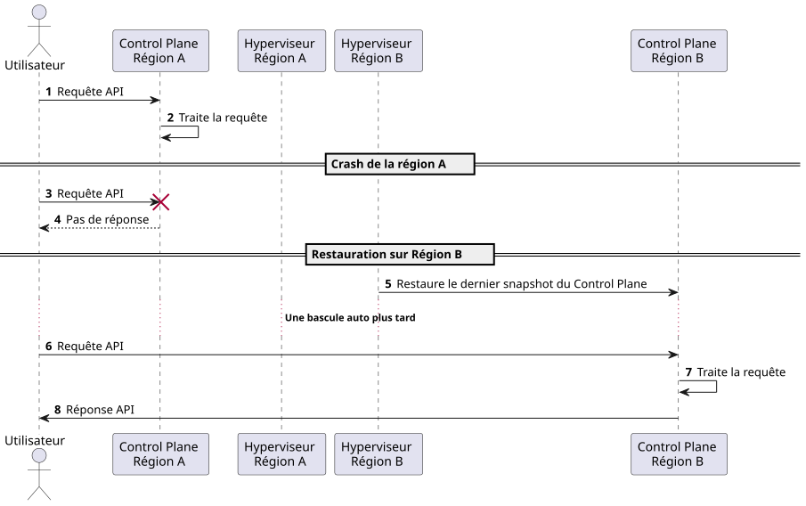
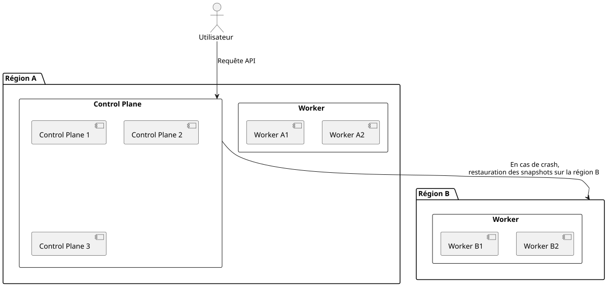
Accord de plusieurs personnes, de plusieurs textes dans un domaine déterminé
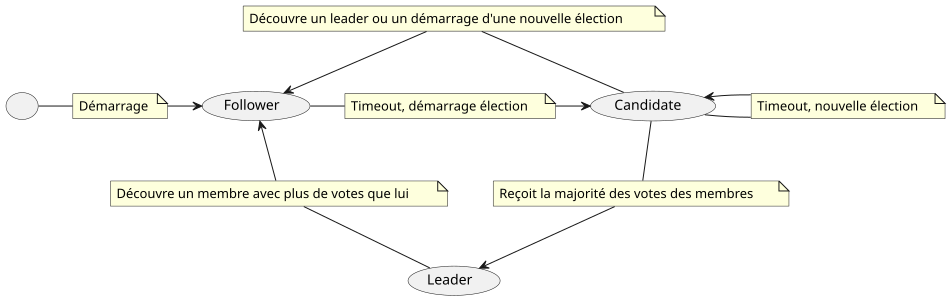
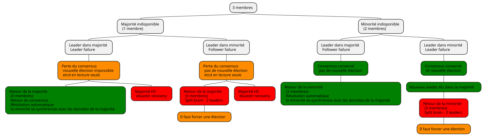
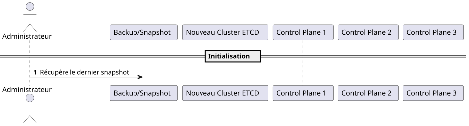
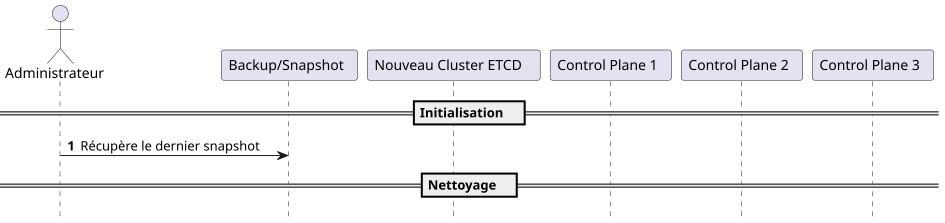
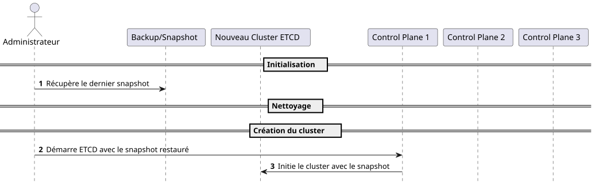
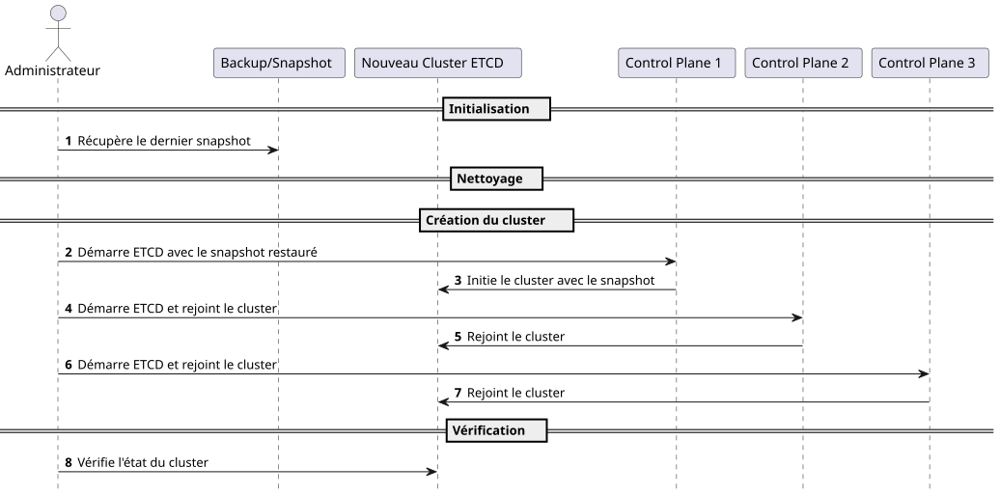
Un control plane haute disponibilité, mais un seul pod pour son application, ça n’a pas grand intérêt…
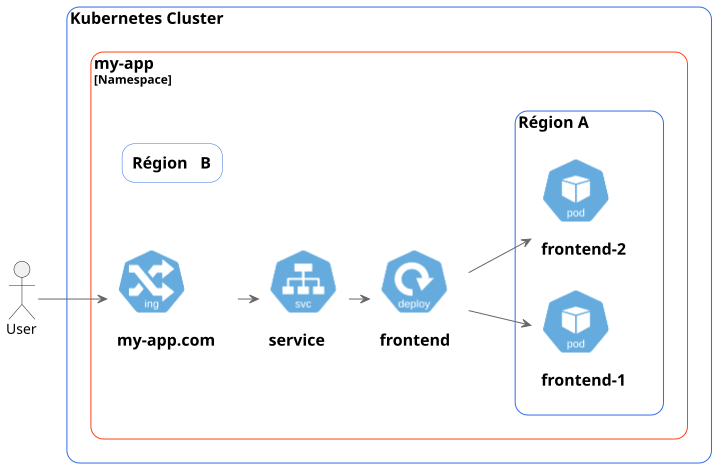
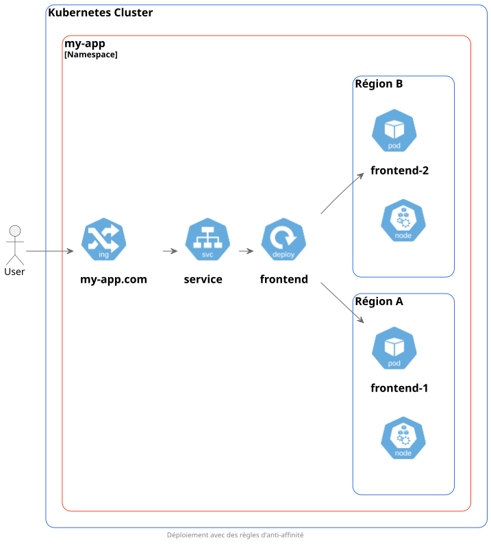
apiVersion: v1
kind: Pod
metadata:
name: my-pod
spec:
affinity:
podAntiAffinity:
requiredDuringSchedulingIgnoredDuringExecution:
- topologyKey: topology.kubernetes.io/region
containers: # [...]apiVersion: v1
kind: Pod
metadata:
name: my-bdd
spec:
affinity:
podAffinity:
preferredDuringSchedulingIgnoredDuringExecution:
- weight: 100
podAffinityTerm:
labelSelector:
matchExpressions:
- key: app.kubernetes.io/name
operator: In
values:
- my-redis
topologyKey: topology.kubernetes.io/region
containers: # [...]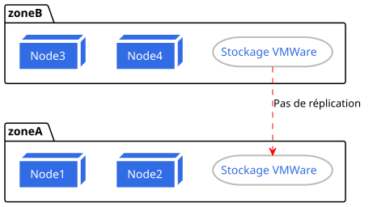
---
apiVersion: postgresql.cnpg.io/v1
kind: Cluster
metadata:
name: database
spec:
affinity:
enablePodAntiAffinity: true
podAntiAffinityType: required # or preferred
topologyKey: topology.kubernetes.io/region
instances: 2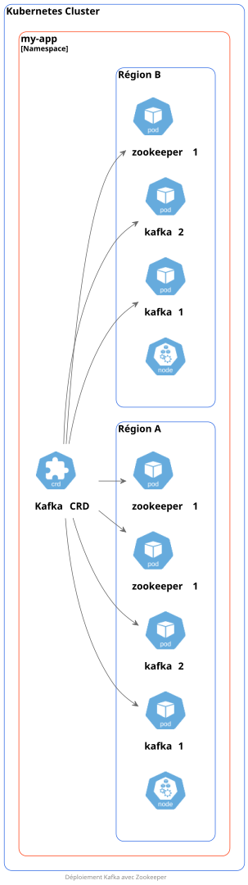
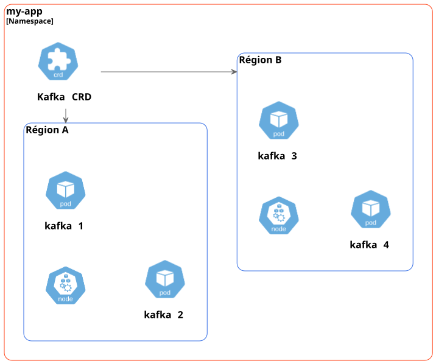
---
kind: Kafka
metadata:
name: kafka
spec:
kafka:
rack:
topologyKey: topology.kubernetes.io/region
config:
replica.selector.class: org.apache.kafka.common.replica.RackAwareReplicaSelector
min.insync.replicas: 2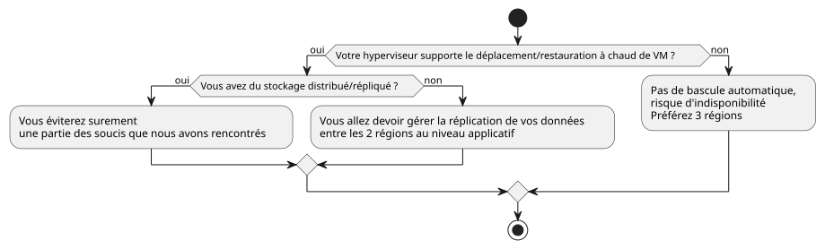
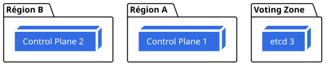
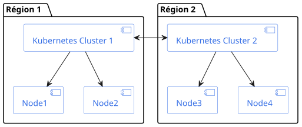
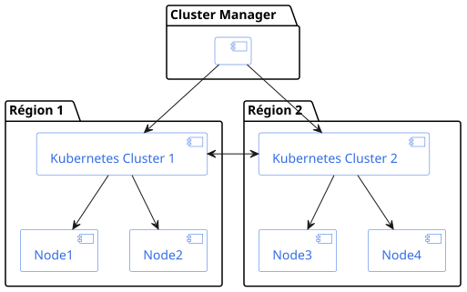